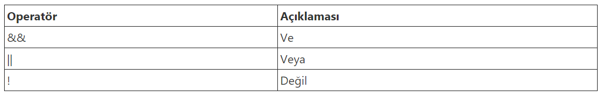
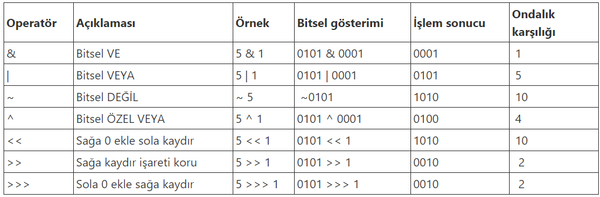

3) Operatörler
- JavaScript operatörleriyle değişkenlere değr atayabilir ve aritmetiksel işlem yapabiliriz.
-Aritmatiksel Operatörler
JavaScript sayılar üzerinde toplama, çıkarma, çarpma, bölme ve mod alma gibi matematiksel işlemleri yapmak için aritmetik operatörleri kullanır.
Aritmetik operatörleri sabit değerler(liral) veya değişen değerlerde (değişkenler) kullanabiliriz.
-Operatör ve Operand
Aritmetik operatörlerde sayılar operand veya işlenen olarak adlandırılır.
Operatör ise işlem olarak adlandırılır.
...
-Operatör Önceliği
Operatör önceliği aritmatiksel operatörlerde işlem sırasını belirler.
Matematik kurallarında olduğu gibi önce çarpma yapılır. Çarpma ve bölme operatörleri toplama ve çıkarma operatörlerinden önce işleme alınır.
Parantez kullanarak öncelik değiştirilebilir.
Aynı işlem önceliğine sahip operatörlerde işlemler soldan sağa doğru yapılır.

-Atama Operatörleri
Atama operatörleri JavaScript değişkenlerine değer atamak için kullanılır.
-Birleştirme Operatörleri
Toplama operatörü sayısal değerlerde toplama işlemi yaparken metinsel değerlerde birleştirme işlemi için kullnılır.
-Metin ve Sayıları Toplama
İki sayısal değeri toplamak iki sayısal değerin toplamını verir. İki metinsel ifadenin toplamı iki metinsel değerin birleşimini verir.
-Karşılaştırma Operatörleri
Karşılaştırma operatörleri, değişkenler veya değerler arasındaki eşitlik ve farkı bulmak için kullanılır.>
Kaşılaştırma operatörleri değerleri karşılaştırmak ve sonuca göre işlem yapmak için koşullu ifadelerde kullanılır.

-Mantıksal Operatörler
JavaScript mantıksal operatörleri kullanarak karşılaştırma işlemini birden fazla koşula göre yapabiliriz.
-Bit Operatörleri
Bit operatörleri değişkenleri bitsel olarak karşılaştırmayı sağlar.
